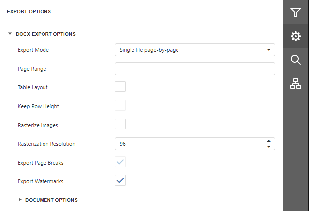
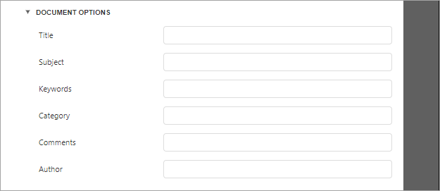

DOCX Export Options
Before exporting a document to DOCX format, you can specify DOCX-specific options in the Export Options panel.

Export Mode
Specifies how a document is exported to DOCX. The following modes are available.
- The Single file mode allows export of a document to a single file without dividing it into pages.
- The Single file page-by-page mode allows export of a document to a single file divided into pages. In this mode, the Page range option is available.
Page Range
Specifies a range of pages which will be included in the resulting file. Use commas to separate page numbers. Use hyphens to set page ranges.
Table Layout
The table-based layout is the default layout for reports exported in Single File mode. You can also use the Table Layout option to enable this layout for reports exported in Single File Page By Page mode. When you export a report to DOCX with the table-based layout, a table with merged cells is created to mimic the original layout of the report's controls.
Keep Row Height
This option is enabled if you enable the Table Layout option. If you edit content inside the table after the export, the table cells grow to fit the new content size. Thus, the resulting document can differ from the initial document in Print Preview. To avoid this effect, enable the Keep Row Height option. If the option is set to false (the default value), row heights are not fixed. If you add a new line of text to a cell, the line increases the cell's row height.
Rasterize Images
Specifies whether to rasterize vector images, such as pictures, charts, or barcodes.
Rasterization Resolution
Specifies the image resolution for raster images.
Export Page Breaks
Specifies whether to include page breaks in the exported DOCX file.
Export Watermarks
Specifies whether the exported document should include watermarks (if they exist).
Document Options
The Document Options complex property contains options which specify the Document Properties of the created DOCX file. Click the complex property's header to access its nested options.
